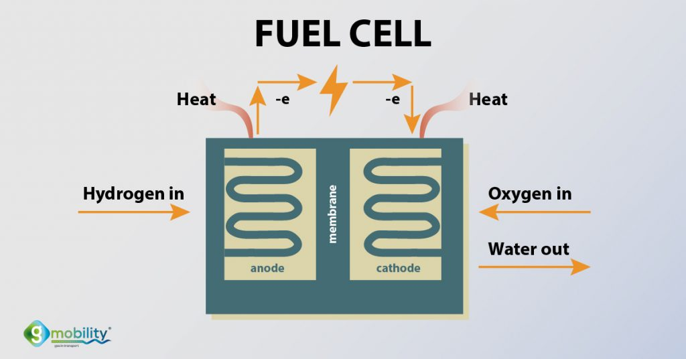

Fuel Cell ကို မြန်မာလို ပြန်ရင်တော့ လောင်ဆာဘက်ထရီ လို့ ပြန်ရမယ် ထင်ပါတယ်။ ဒီဆောင်းပါးမှာတော့ Fuel Cell လို့ပဲ သုံးပါမယ်။
Fuel Cell ဆိုတာ လျှပ်စစ်ဓါတ်အား ထုတ်ပေးတဲ့ ကိရိယာ တမျိုးပဲ ဖြစ်ပါတယ်။ ဒီလို လျှပ်စစ်ဓါတ်အား ထုတ်တဲ့ နေရာမှာ လျှပ်စစ်ဓါတု ဓါတ်ပြုမှုနည်းလမ်း (Electrochemical reaction) ကို အသုံးပြုပြီး လျှပ်စစ်ဓါတ်အား ထုတ်ယူတာ ဖြစ်ပါတယ်။ ယခုလက်ရှိ Fuel Cell တွေမှာ ဟိုက်ဒရိုဂျင်နဲ့ အောက်ဆီဂျင်ကို ပေါင်းစပ်ပြီး လျှပ်စစ်ဓါတ်အား ထုတ်ပေးပါတယ်။ ဒီလို ထုတ်ရာမှာ ဘေးထွက်ပစ္စည်း အနေနဲ့ အပူနဲ့ ရေတို့ ထွက်လာပါတယ်။
Fuel cell မှာ ဟိုက်ဒရိုဂျင်နဲ့ အောက်ဆီဂျင် ပေါင်းစပ်ပြီး လျှပ်စစ်ဓါတ်အား ထုတ်တယ် ဆိုတော့ ရိုးရိုး ဟိုက်ဒရိုဂျင် ဓါတ်ငွေ့အားသုံး အင်ဂျင်နဲ့ ဘာကွာလဲ မေးစရာ ရှိပါတယ်။ ပုံမှန် ဟိုက်ဒရိုဂျင် အင်ဂျင်က လျှပ်စစ် ထုတ်ဖို့ဆို ဒီ ဟိုက်ဒရိုဂျင်နဲ့ အောက်ဆီဂျင် ပေါင်းစပ်လောင်ကျွမ်းမှုကြောင့် ထွက်လာတဲ့ အပူကို အသုံးပြုပြီး အင်ဂျင်ကို လည်ပတ်ရပါတယ်။ ဒီလည်ပတ်တဲ့ အင်ဂျင်ကမှာ လျှပ်စစ်ထုတ်စက် (ဒိုင်နမို) ကို လှည့်ပြီး လျှပ်စစ်ပြန်ထုတ်တာ ဖြစ်ပါတယ်။ ဒါပေမယ့် Fuel Cell တွေမှာတော့ ဒီလို အပူကနေ လျှပ်စစ်ထုတ်တာ မဟုတ်ပါဘူး။
Fuel Cell ဘယ်လိုအလုပ်လုပ်လဲ
Fuel Cell ဘယ်လို အလုပ်လုပ်သလဲ မပြောခင် ဟိုက်ဒရိုဂျင်ရဲ့ ဖွဲ့စည်းပုံကို တချက်လောက် ကြည့်လိုက်ရအောင်ပါ။ စကြာဝဠာထဲက ဒြပ်စင်တွေထဲမှာ ဟိုက်ဒရိုဂျင်ဟာ အရိုးရှင်းဆုံးပါ။ သူ့မှာ ပရိုတွန် တစ်လုံးနဲ့ အီလက်ထရွန် တစ်လုံးပဲ ပါပါတယ်။ အလယ်မှာ ပရိုတွန် တစ်လုံးရှိပြီး သူ့ကိုမှ အီလက်ထရွန် တစ်လုံးက ပတ်နေတာ ဖြစ်ပါတယ်။ ကမ္ဘာနဲ့ လလိုပေါ့ဗျာ။Fuel Cell တစ်ခုရဲ့ အတွင်းကို ဖွင့်ကြည့်မယ်ဆို အမဖက် ခန်း (anode) ၊ အဖိုဖက် ခန်း (cathod) နဲ့ ကြားက ကာထားတဲ့ အမြှေးပါး (electrolyte membrane) ပါရှိပါတယ် (အောက်ပုံကြည့်ရန်)။ ပထမဆုံး အမဖက် ခန်းထဲကို ဟိုက်ဒရိုဂျင် ဓါတ်ငွေ့ကို ဖြတ်သန်းစီးဆင်း စေပါတယ်။ အဖိုဖက် ခန်းကိုကျတော့ အောက်ဆီဂျင်ကို ဖြတ်စီးစေပါတယ်။ အမဖက် အခန်းထဲမှာ ဟိုက်ဒရိုဂျင်ကနေ အီလက်ထရွန်နဲ့ ပရိုတွန် နဲ့ကို ခွဲထုတ်ပေးတဲ့ ဓါတုပစ္စည်းတွေ ထည့်ထားပါတယ်။ အဲ့ဒါတုပစ္စည်းတွေနဲ့ တွေ့တဲ့အခါ ဟိုက်ဒရိုဂျင်မှာ ပါတဲ့ ပရိုတွန်နဲ့ အီလက်ထရွန်ဟာ တစ်ခုစီ သပ်သပ် ကွဲထွက်သွားပါတယ်။ ကြားလေသွေးတော့လဲ ဝေးရတာပေါ့ဗျာ။

ဒီ ဓါတ်ကြိုးထဲ ဝင်သွားတဲ့ အီလက်ထရွန်တွေဟာ လျှပ်စီးပါတ်လမ်း တစ်ပါတ်ပြည့်တဲ့အခါ အဖိုဖက်ခြမ်းကို ပြန်ဝင်လာပါတယ်။ ဒီ အဖိုခန်းထဲမှာ ပရိုတွန်နဲ့ အီလက်ထရွန်တို့ ပြန်လည်ပေါင်းဆုံမိပြီး ဟိုက်ဒရိုဂျင် ဖြစ်သွားပါတယ်။ ဒီမှာ ပြန်ဖြစ်လာတဲ့ ဟိုက်ဒရိုဂျင်က အောက်ဆီဂျင်နဲ့ တွေ့တဲ့အခါ ပေါင်းစပ်ဓါတ်ပြုပြီး ရေဖြစ်သွားပါတယ်။ ဒီ ဓါတ်ပြုမှုကြောင့် ဘေးထွက်ပစ္စည်း အနေနဲ့ ရေတင်မက အပူပါ ထွက်လာပါတယ်။
အကျိုးကျေးဇူး
Fuel cell ထဲမှာ ဘာမှု လှုပ်ရှားတဲ့ ပစ္စည်း မပါပါဘူး။ ဒါ့ကြောင့် fuel cell တွေဟာ ပျက်တာ၊ အလုပ်မလုပ် တာတွေ ဖြစ်ဖို့ အလွန်ဖြစ်ခဲပါတယ်။ ဒီလို စိတ်ချရလို့ သူ့ကို အရေးကြီးတဲ့ လျှပ်စစ်ဓါတ်အား ထုတ်ပေးဖို့ လိုအပ်တဲ့ နေရာတွေမှာ အထူးပြု သုံးစွဲကြပါတယ်။ နောက်ပြီး Fuel Cell တွေက လျှပ်စစ်ဓါတ်အားလဲ ပြန်သွင်းပေး စရာ မလိုပါဘူး။ ဟိုက်ဒရိုဂျင်နဲ့ အောက်ဆီဂျင် မပြတ်သရွေ့ သူ့ဆီကနေ လျှပ်စစ်ဓါတ်အား ထုတ်ပေးနေမှာ ဖြစ်ပါတယ်။နောက်ပြီး သူ့ဆီက ထွက်လာတာက ရေနဲ့ အပူပဲ ဖြစ်တာမို့ သာမန် ဘက်ထရီတွေလို ဓါတုပစ္စည်းတွေလဲ ထွက်မလာသလို အခြားသော လောင်စာဆီသုံး အင်ဂျင်တွေလိုလဲ ကာဘွန်ဒိုင် အောက် ဆိုက်နဲ့ အခြား လေထုညစ်ညမ်းစေတဲ့ အရာတွေ ထွက်လာခြင်း မရှိပါဘူး။ တနည်းပြောရရင် သဘာဝ ပတ်ဝန်းကျင်ကို ဆိုးကျိုး ဖြစ်စေခြင်း မရှိပါဘူး။
နောက်ပြီး လောင်ကျွမ်းပြီး ရတဲ့ အပူနဲ့ ဒိုင်နမိုကို လှည့်ပြီးမှာ လျှပ်စစ်ထုတ်တာ မဟုတ်လို့ ရတဲ့ လျှပ်စစ်ဓါတ်အား ပမာဏကလဲ ပိုများပါတယ်။ တနည်းအားဖြင့် ကြားမှာ လေလွင့်ဆုံးရှုံးမှု နည်းသွားပါတယ်။ ပြီးတော့ အချို့ စနစ်တွေမှာ Fuel Cell ကနေဘေးထွက်အနေနဲ့ ထွက်လာတဲ့ အပူကို ပြန်ပြီး အသုံးချတဲ့ နည်းစနစ်ကိုလဲ တီထွင်နေ ကြပါတယ်။ ဒီနည်းနဲ့ အလေအလွင့် နည်းနိုင်သမျှ နည်းအောင် ပြုလုပ်နေကြပါတယ်။
Fuel Cell တွေကို လိုရင် လိုသလို အလွယ်တကူ တိုးချဲတပ်ဆင် နိုင်တာမို့ အင်ဂျင်နဲ့ လျှပ်စစ်ဓါတ်အား ထုတ်တာထက် တိုးချဲရတာ ပိုလွယ်ပါတယ်။ ဓါတ်အား လိုအပ်ချက် များလာရင် များလာတဲ့ အလျှောက် fuel cell တွေ တိုးချဲ့တပ်ဆင် သွားယုံပါပဲ။
Fuel Cell တွေကို ဟိုက်ဒရိုဂျင် လောင်ဆာတစ်မျိုးတည်းနဲ့ ပြုလုပ်လို့ ရတာ မဟုတ်ပါဘူး။ အခြား လောင်ဆာတွေ ဖြစ်တဲ့ သဘာဝ ဓါတ်ငွေ့၊ မိသိန်း၊ မက်သနော နဲ့ အခြား လောင်ဆာရည်တွေကိုလဲ သုံးစွဲနိုင်ပါတယ်။ ဒါပေမယ့် ဟိုက်ဒရိုဂျင်လောက်တော့ မသန့်ရှင်းလို့ ဟိုက်ဒရိုဂျင်ကို ပိုအသုံးများကြပါတယ်။
Fuel Cell ရဲ့အနာဂါတ်
ယနေ့အခါ ဒီ Fuel Cell တွေကို နေရာအနှံ့မှာ ကျယ်ကျယ်ပြန့်ပြန့် သုံးစွဲနေကြပြီ ဖြစ်ပါတယ်။ အိမ်တွေကို လျှပ်စစ်ဓါတ်အားပေးဖို့၊ အရေးကြီးတဲ့ ဆေးရုံတွေနဲ့ အစားအစာ သိုလှောင်တဲ့ နေရာတွေကို ဓါတ်အား မပြန်မတောက် ပေးနိုင်ဖို့နဲ့ အင်တာနက် ဆာဗာကြီးတွေ လျှပ်စစ်ဓါတ်အား ပေးဖို့ နေရာတွေမှာ တွင်တွင်ကျယ်ကျယ် အသုံးပြုနေ ကြပါတယ်။ နောက်ပြီး ကားတွေ၊ မီးရထားတွေနဲ့အခြား ယာဉ်တွေ အမျိုးမျိုးမှာလဲ အသုံးပြုနေ ကြပါတယ်။Fuel Cell တွေရဲ့ အသုံးဟာ တဖြည်းဖြည်း ပိုပြီး တွင်ကျယ်လို့ လာနေပါတယ်။ အထူးသဖြင့် လျှပ်စစ်စွမ်းအင်သုံး မော်တော်ယာဉ်တွေလို အချိန် အကြာကြီး အားပြန်သွင်းရတာမျိုး မရှိတဲ့ အတွက် အနာဂါတ်မှာ မော်တော်ယာဉ်တွေကို Fuel Cell တွေနဲ့ မောင်းနှင်မယ်လို့ ပညာရှင် အများက ယုံကြည်နေ ကြပါတယ်။ ဒီနည်းအားဖြင့် ဓါတ်ဆီကားတွေနဲ့ လျှပ်စစ်ကားတွေ နှစ်မျိုးလုံးရဲ့ အားသာချက်တွေကို ရရှိနိုင်မှာ ဖြစ်ပါတယ်။
Fuel Cell တွေကို တချိန်မှာ သာမန် ဘက်ထရီတွေ နေရာမှာပါ အပြည့်အဝ အစားထိုး သုံးစွဲသွားနိုင်လိမ့်မယ်လို့ အချို့က မျှော်လင့်ထားကြပါတယ်။ နောင်တချိန်မှာ ဖုန်းတွေနဲ့ လက်ပ်တော့ပ် ကွန်ပျူ တာ တွေကိုပါ fuel cell နဲ့ အသုံးပြုသွားနိုင်ဖို့ မျှော်လင့်ထားကြပါတယ်။
အခက်အခဲများ
အဓိက အခက်အခဲကတော့ ဈေးနှုန်းပဲ ဖြစ်ပါတယ်။ လက်ရှိမှာ Fuel Cell တွေ တွင်ကျယ်စွား အသုံးပြုနိုင်ဖို့ ကုန်ကျစားရိတ် ကြီးမားနေပါသေးတယ်။ လျှပ်စစ်ကားတွေမှာ အပြည့်အဝ သုံးစွဲဖို့တောင် သာမန် ဘက်ထရီထက် ကုန်ကျစားရိတ်က ပိုများနေလို့ပါ။ ဒါပေမယ့် သိပ်မကြာခင် အချိန်မှာ ကျယ်ကျယ်ပြန့်ပြန့် သုံးစွဲနိုင်တဲ့ အထိ ဈေးနှုန်းတွေ ကျဆင်းလာမယ်လို့ ယူဆကြပါတယ်။Reference:
Fuel Cell Basics | FCHEA
Fuel Cells | National Geographic